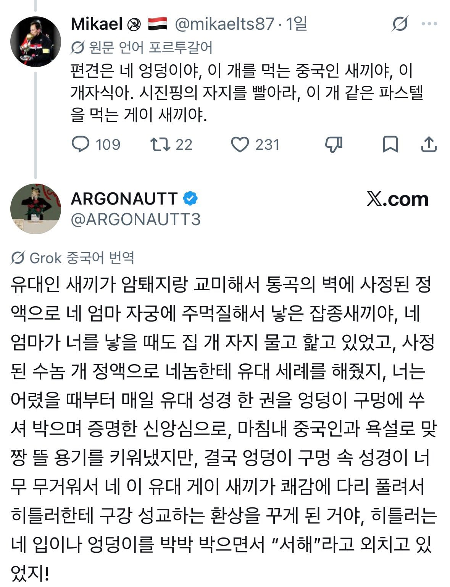

ㅅㅂㅋㅋㅋㅋㅋㅋㅋㅋㅋㅋㅋㅋ

ㅅㅂㅋㅋㅋㅋㅋㅋㅋㅋㅋㅋㅋㅋ
Sieg Heil을 한자로 쓰면 서해인듯?
쟤가 쓴글 찾아가보니 다른 중국인이 이리 답글써놓음
서해”는 번역이 안 되니까, 그냥 “Sieg Heil”로
바꾸면 바로 알아들어요
지크 하일!
ㅆㅂ 내가 당사자였으면 엉엉 울었겠다ㅋㅋㅋㅋㅋㅋㅋ
미카엘 쟤는 평소에도 인종차별적인 트윗 많이 했었네
단순 욕이 아니라 탄생 설화네
역시 이백과 이태백의 나라
박수가 절로 나오는구만
와 ㅋㅋㅋㅋㅋㅋㅋㅋㅋ
제목 보고 좀 더 고급스럽게 깔 줄 알았는데 그건 아닌 것이 아쉽네
우리나라의 욕과는 다른 깊이가 느껴진다
명문이다 명문
키야
원문이 궁금한데 ㅋㅋㅋㅋㅋ
서해는 뭔소리야